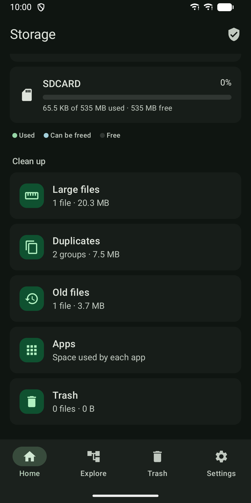
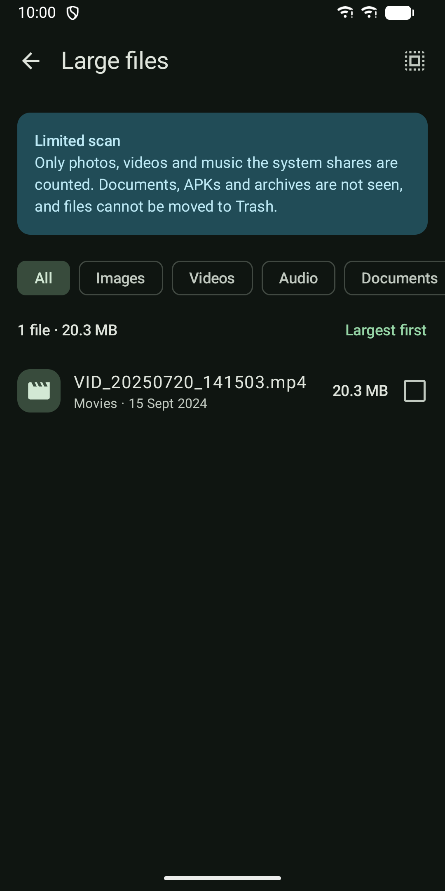
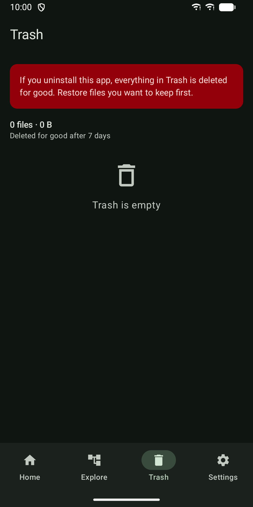

Storage Analyzer: Big Files
Find large files, duplicates and old junk, then clear space safely.







About
See what fills your phone and free up space, fully offline. Storage Analyzer does not ask for the internet permission, so Android does not let it go online at all. No ads, no analytics, no crash reports, no account, no cloud. Everything it finds stays on your phone. You can check this yourself: the app shows its network permissions, read live from Android, on its privacy screen. WHAT IT FINDS - Large files, sorted by size, with filters for images, videos, audio, documents, APKs and archives. - Exact duplicates: files over 1 MB with the same size are compared by SHA-256 checksum, so only true copies are shown. The newest copy is kept by default, and at least one copy is always kept. - Old files not changed for more than 90 days, grouped into Downloads, Screenshots, WhatsApp media, APK installers and other files. - Folder sizes as a map you can tap through, with a list view and breadcrumb to go back. - Space used by each app (app, data and cache), with a shortcut to the app's system settings to clear its cache. SAFE DELETE Deleted files go to the app's Trash first. Undo right away, or restore them from Trash for 7 days. After that they are deleted for good. Files are moved, not copied, so it is fast even for big videos. Folders are never deleted. YOU STAY IN CONTROL - Scans run only when you tap Scan, never in the background. - Full mode uses All files access to check every folder on internal storage and SD card. - Prefer not to grant that? Limited mode only looks at the photos, videos and music Android shares with apps. - Usage access is only asked for on the Apps screen, and only app sizes are read. ALSO - Home screen widget with used storage, space you can free and last scan time. - Light and dark theme from your system setting. - Phone and tablet layouts. - Works with screen readers. Note: uninstalling the app also empties its Trash. Restore files you want to keep first.
Guides
- How to Find Duplicate Files on Android How to find exact duplicate files on an Android phone, how checksums prove two files are the same, and which copy to keep when you delete.
- How to Find Old Unused Files on Android Find files you have not touched in 90 days: old downloads, screenshots, WhatsApp media and APK installers. See the rules and a worked example.
- MB to GB Conversion Chart for Phone Storage Convert MB to GB and back with a chart and a calculator. Learn why a 128 GB phone shows less space, with worked examples for GB and GiB.